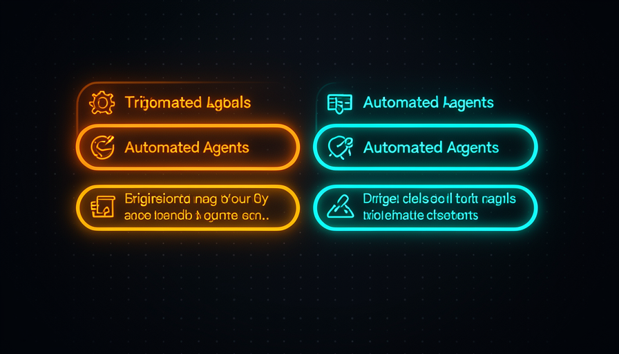
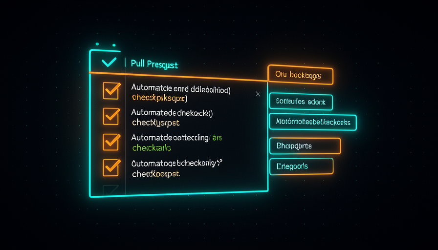

📖 Glosario vivo (lee antes — vuelve siempre que lo necesites)
Este módulo entra en el mundo de GitHub. Si «CI», «Action» y «PR» son novedades para ti, fija primero estos términos; el resto del módulo solo los usa:
.yml dentro de .github/workflows/ diciendo "cuando ocurra X, ejecuta estos pasos". Es gratis y vive junto a tu repositorio.tsc en TypeScript). Detecta errores tontos antes de ejecutar.bug, agent:explore). Además de organizar, puede lanzar automatizaciones.☁️ Agentes en CI
🧠 Imagínalo así: tienes un excelente empleado, pero solo trabaja cuando está sentado en la tu mesa, usando el tu computadora. Ahora imagina que le das una sala propia en la oficina de la empresa (la nube), que se activa sola cada vez que llega un pedido. Trabaja allí y tu escritorio queda libre. Eso es lo que CI hace con el agente.
En los módulos anteriores ejecutaste el agente AFK (lejos del teclado) en tu máquina, dentro de una sandbox. El siguiente nivel es sacar al agente de tu computadora y ponerlo en el CI (integración continua). CI es simplemente un robot que vive junto a tu repositorio y ejecuta pasos automáticamente cuando sucede algo: alguien abre un PR, hace un push, o pega una etiqueta. En GitHub, este robot se llama GitHub Action.
La clave de Matt Pocock es unir ambas cosas: "Run agents using Sand Castle on GitHub Actions — unreasonably effective, parallelize as much as you want, not worried about local resources." Es decir: ejecutar agentes en la nube de GitHub es increíblemente eficaz, porque puedes paralelizar tantas como quieras sin preocuparte por los recursos de tu máquina. El CI se convierte en el nuevo hogar del agente: se activa solo cuando un disparador lanza, realiza la tarea en una máquina virtual descartable y desaparece. El porqué de que esto sea tan potente: no dependes de que tu notebook esté encendida, y la Action ya tiene acceso al código, al historial y a las credenciales del proyecto.
El agente se activa en la nube solo cuando se dispara un evento, y tu máquina sigue libre.
⚠️ Error común de principiante
Creer que «CI» es una herramienta paga y complicada que solo usan las grandes empresas. No: GitHub Actions es gratis en cualquier repositorio, y un workflow útil cabe en ~20 líneas de YAML. El costo de entrada es casi cero; lo difícil es solo el primer archivo.
En 1 frase: ejecutar el agente en CI es darle una sala en la nube que se activa sola — tu máquina queda libre y puedes paralelizar a voluntad.
Profundiza (opcional): ¿por qué «Sand Castle» + Actions y no solo Actions?
La GitHub Action es el disparador y la máquina; el Sand Castle es lo que ejecuta al agente con aislamiento dentro de ella. Sin sandbox, un agente suelto podría, en palabras de Matt, «delete your home directory or exfiltrate env vars». La Action proporciona la infraestructura en la nube; el sandbox proporciona la contención. Los dos juntos = AFK en la nube con seguridad.
🔍 La acción de review
🧠 Imagínalo así: cada vez que alguien entrega un informe, un revisor con experiencia lo lee enseguida y pega una nota adhesiva: "está excelente" o "mira este párrafo". Nunca duerme, nunca olvida y hace esto gratis con cada informe. La acción de revisión es ese revisor, pero para código.
El ejemplo concreto que da Matt es una agent review action: "una acción de revisión del agente que se ejecuta en un PR, hace un checkout, verifica los tipos, ejecuta el agente de revisión (un prompt local) y responde 'se ve bien'." Al dividir esto en pasos, la Action hace cuatro cosas, en este orden: (1) se activa cuando un PR está abierto; (2) hace el checkout del código; (3) ejecuta el type check para detectar errores obvios; y (4) llama al agente de revisión, que lee el diff y comenta.
Fíjate en algo importante: el review agent es "un prompt local" — es decir, el cerebro del revisor es solo un prompt guardado en el propio repositorio (una instrucción como «revisa este diff en busca de errores, seguridad y claridad; responde en portugués»). Esto es puro harness: la Action es el chasis que lleva ese prompt a la nube y lo ejecuta en cada PR. El porqué de que esto valga oro: creas una barrera de calidad que se ejecuta en todo PR, sin depender de que alguien se acuerde de revisarlo. Y el error común es pedirle a este agente que aprueba y haz merge por tu cuenta — al principio solo comenta; quien decide sigues siendo tú (volveremos a esto en el tema 6 y en el módulo 4.6).

Recuperación rápida: en la review action de Matt, ¿qué es el «review agent»?
En 1 frase: la review action es "checkout → type check → agente lee el diff → comenta en el PR" — un revisor que nunca duerme.
🏷️ Etiquetas que activan
🧠 Imagínalo así: en la cocina de un restaurante, el mesero no grita la orden: pega un papelito en la rueda de pedidos. El cocinero ve «🟥 postre» y empieza. La label es ese papelito: pegas una etiqueta y el agente adecuado empieza a trabajar.
Aquí está el truco: no necesitas «ejecutar un comando» para activar al agente. Basta con agregar una etiqueta. Matt lo muestra al revisar las issues de Sand Castle: después de la clasificación, "adds a label agent:implement and implements on GitHub Actions". La label es el disparador: la Action escucha el evento "se agregó una label" y activa al agente correspondiente. En su flujo real aparecen tres labels (issue #795): agent:explore (investigará y volverá con datos), agent:in-progress (está trabajando) y agent:implement (ordena implementarlo de verdad).
¿Por qué usar labels en vez de comandos? Porque, en palabras de Matt, "todo el desarrollo es solo una cola de tareas: los PM las agregan a la cola y tú las completas; varios nodos van sacando tareas de la cola." Todo desarrollo es una cola de tareas. La label indica cómo entra la tarea en la cola y dice qué tipo de trabajo necesita. En su ejemplo, el bot github-actions todavía publica un comentario de "Triage" con un TL;DR y la dificultad estimada, todo activado por el cambio de etiqueta. El error común aquí es intentar un único loop gigante que lo haga todo; eso «no coincide con la forma en que trabajan los equipos». Las etiquetas separan las fases (explorar → implementar) y te mantienen al mando en cada paso. Esto prepara el módulo 4.4 («Loops × Filas»).
En 1 frase: agregar una etiqueta como agent:explore o agent:implement es el disparador: la etiqueta activa al agente correcto.
📤 El PR como resultado
🧠 Imagínalo así: un empleado no publica nada directamente en el sitio web de la empresa. Te entrega un borrador en una carpeta para que lo revises y apruebes. El PR es esa carpeta: el agente nunca toca el código principal por su cuenta; te entrega una propuesta.
Cuando el agente termina una tarea en la nube, el su salida es un PR — no un commit directo en la branch principal. Esto es fundamental por dos motivos. Primero, seguridad: el código nuevo queda en una branch separada, así que nada entra en el producto sin pasar por una puerta de control. En segundo lugar, visibilidad: el PR reúne en un solo lugar el diff, los comentarios de la review action, el resultado del type check y la discusión; se convierte en el «paquete» que revisas.
Aquí es donde todo encaja: el agente produce el PR (tema 3 → label → implementa), la acción de review comenta en ese mismo PR (tema 2), y tú decide el merge. Matt describe el ciclo completo de una automatización: "error de telemetría (Sentry) → crea issue → label explore → el agente devuelve datos estructurados (¿se puede corregir ya o hace falta una persona?) → implementa → revisa → tag auto-merge o avisa a la persona." Fíjate en el final: o lo marca para auto-merge, o él te llama. La idea clave del módulo 4.6 ya aparece: "push human-in-the-loop checkpoints further toward the final output" — empujar cada vez más hacia el final el punto en el que tú intervienes. El error común es dejar que el agente haga commit directamente en main «para ir más rápido»; pierdes de una vez la instancia de revisión y la observabilidad.
🔬 Ejemplo resuelto: del bug de Sentry al PR listo
Un error aparece en el Sentry (monitoreo). Mira el recorrido de punta a punta, todo en la nube:
- Issue creada automáticamente a partir del error de Sentry.
- Pegas
agent:explore. El agente investiga y vuelve con dato estructurado: «causa probable X; ¿puedes corregirlo por tu cuenta? sí/no». - Es corregible → pegas
agent:implement. El agente se ejecuta en GitHub Actions y abre un PR con la reparación. - A acción de revisión comenta en el PR: pasó la comprobación de tipos, el diff parece seguro, "looks good".
- Desenlace: o marca auto-merge (cambio trivial), o te avisa (necesita supervisión humana).
Solo apareciste para pegar dos labels y dar el visto bueno final. El resto se ejecutó en la nube y todo terminó en un PR revisable.

En 1 frase: la salida del agente es un PR — una propuesta que se puede revisar, nunca un commit directo en main.
🔋 Sin bloquear la máquina local
🧠 Imagínalo así: tienes un solo horno en casa y quieres hornear diez pasteles. En casa, haces uno a la vez y la cocina se pone muy caliente. Si alquilas diez hornos en una cocina industrial, horneas los diez al mismo tiempo y tu casa se mantiene fresca. La nube es la cocina industrial.
Este es el gran motivo práctico para mover agentes a CI. La frase de Matt lo dice todo: "paraleliza todo lo que quieras, no me preocupan los recursos locales." Cada Action se ejecuta en una máquina virtual propia y desechable, proporcionada por GitHub. Puedes tener cinco PR abiertos al mismo tiempo, cada uno con su agente trabajando en paralelo, y tu laptop ni siquiera se calienta; incluso puede estar apagada. Esto conecta con el módulo 4.2 ("Paralelizar & sandboxes"): allí los agentes paralelos competían por el tu CPU; aquí se ejecutan en máquinas separadas en la nube, así que la paralelización se vuelve prácticamente ilimitada. Hay un beneficio adicional de ahorro que conecta con el módulo 1.5: con un harness bien configurado (guard rails, verificación de tipos, prompts claros), puedes usar un modelo más barato para hacer el mismo trabajo, con menos tokens "dándose contra la pared". El error común es seguir ejecutándolo todo localmente «porque es más sencillo» y bloquear toda la máquina cada vez que inicias dos o tres agentes.
En 1 frase: en la nube cada agente obtiene su propia máquina virtual: paralelización casi ilimitada, tu máquina siempre libre.
🛠️ Armar la tuya
🧠 Imagínalo así: crear tu primera Action es como instalar un interruptor en la pared: trabajoso una vez, mágico para siempre. Después solo tienes que «apretar el botón» (abrir un PR) y la luz se enciende sola.
Es hora de juntar todo en un archivo real. Crea un archivo en .github/workflows/agent-review.yml en tu repositorio. Hace exactamente lo que describe Matt: dispara on: pull_request, hace el checkout, ejecuta el type check, llama al agente de revisión (con el prompt local) y comenta en el PR. Lee cada línea: está todo comentado:
# Roda um agente de review em todo Pull Request.
name: Agent Review
# GATILHO: toda vez que um PR e aberto ou recebe novos commits.
on:
pull_request:
types: [opened, synchronize, reopened]
# Permissoes minimas: ler o codigo, escrever comentarios no PR.
permissions:
contents: read
pull-requests: write
jobs:
review:
runs-on: ubuntu-latest # maquina virtual descartavel na nuvem
steps:
# 1) CHECKOUT - baixa o codigo do PR pra dentro da VM
- name: Checkout
uses: actions/checkout@v4
with:
fetch-depth: 0 # historico completo, pra gerar o diff
- name: Setup Node
uses: actions/setup-node@v4
with:
node-version: "20"
- name: Install deps
run: npm ci
# 2) TYPE CHECK - pega erros de tipo antes de revisar
- name: Type check
run: npx tsc --noEmit
# 3) REVIEW AGENT - roda o agente com um PROMPT LOCAL
- name: Run review agent
id: review
env:
ANTHROPIC_API_KEY: ${{ secrets.ANTHROPIC_API_KEY }}
run: |
# gera o diff do PR contra a branch base
git diff origin/${{ github.base_ref }}...HEAD > /tmp/pr.diff
# o "cerebro" do revisor e so um prompt versionado no repo
npx @anthropic-ai/claude-code -p \
"$(cat .github/prompts/review.md)
Diff a revisar:
$(cat /tmp/pr.diff)
Responda em portugues. Se estiver ok, diga 'looks good'.
Senao, aponte bugs, riscos de seguranca e melhorias." \
> /tmp/review.md
# 4) COMENTA NO PR - publica o parecer do agente
- name: Comment on PR
uses: actions/github-script@v7
with:
script: |
const fs = require('fs');
const body = fs.readFileSync('/tmp/review.md', 'utf8');
await github.rest.issues.createComment({
owner: context.repo.owner,
repo: context.repo.repo,
issue_number: context.issue.number,
body: "Agent Review\n\n" + body
});
Eso es todo. Observa que lo «inteligente» del revisor está en .github/prompts/review.md — un prompt local, como dice Matt. Cambiar el comportamiento del revisor es editar un texto, no tocar las tuberías. Este mismo esqueleto se convierte en la base de todo el curso: cambia el disparador (de pull_request para schedule) y se convierte en el cron de revisión de seguridad del módulo 4.5; cambia la etiqueta que lo activa y se convierte en el agente de implementación del tema 3. Empieza con algo simple: solo la revisión comenta. No le des permiso para hacer auto-merge de inmediato; recuerda el módulo 4.6, "¿quién revisa a la IA que dice que todo está bien?". Primero observa cómo trabaja el agente (la observabilidad que te da la revisión); después, a medida que confíes en él, acerca el punto de control humano al final.
En el YAML anterior, ¿dónde está el «cerebro» (el comportamiento) del agente de revisión?
Profundiza (opcional): qué es ese secrets.ANTHROPIC_API_KEY?
Un secret es un valor sensible: aquí, la clave de API que autoriza al agente a llamar al modelo. La registras en Settings → Secrets and variables → Actions del repositorio, y la Action lo inyecta como variable de entorno en runtime. Nunca pegues claves directamente en el YAML: el archivo queda en el historial del repo, y ese es exactamente el tipo de filtración que la revisión busca detectar.
En 1 frase: un YAML de ~40 líneas + un prompt local ya te da un revisor en la nube; cambia el disparador y se convierte en cualquier otra automatización.
🧾 Resumen del módulo
Próximo módulo:
4.4 — Loops × Filas: por qué Matt piensa en «fila, no bucle», el Ralph loop de Huntley y la analogía del rey medieval.